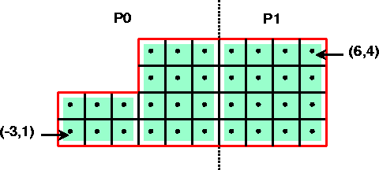

In order to get access to the most efficient and scalable solvers for
scalar structured-grid applications, users should use the
Struct interface described in this chapter. This interface
will also provide access (this is not yet supported) to solvers in
HYPRE that were designed for unstructured-grid applications and
sparse linear systems in general. These additional solvers are
usually provided via the unstructured-grid interface (FEI) or
the linear-algebraic interface (IJ) described in Chapters
5 and 6.
Figure 3.1 gives an example of the type of grid
currently supported by the Struct interface. The interface
uses a finite-difference or finite-volume style, and currently
supports only scalar PDEs (i.e., one unknown per gridpoint).

Figure 3.1: An example 2D structured grid, distributed accross two processors.
There are four basic steps involved in setting up the linear system to be solved:
Assume (3.1) is discretized using standard 5-pt finite-volumes on the uniform grid pictured in 3.1, and assume that the problem data is distributed across two processes as depicted.